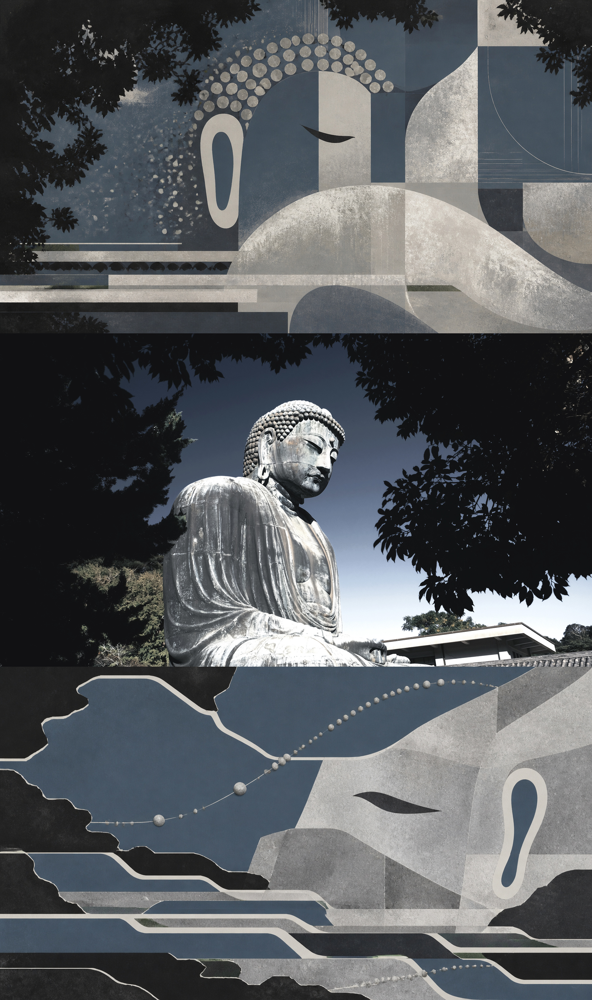
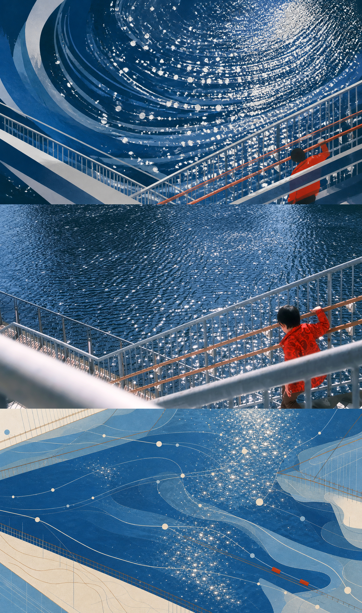
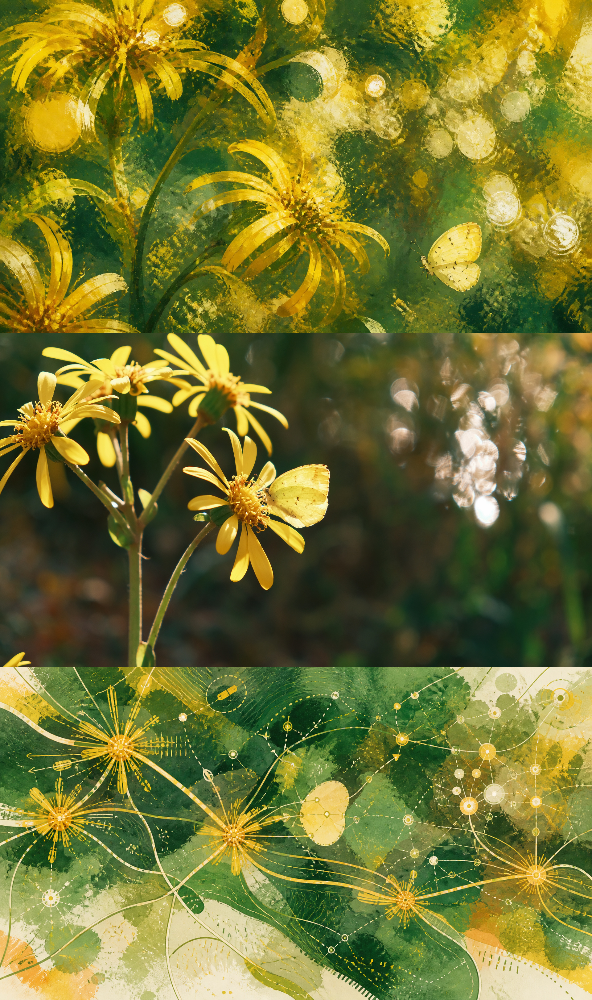
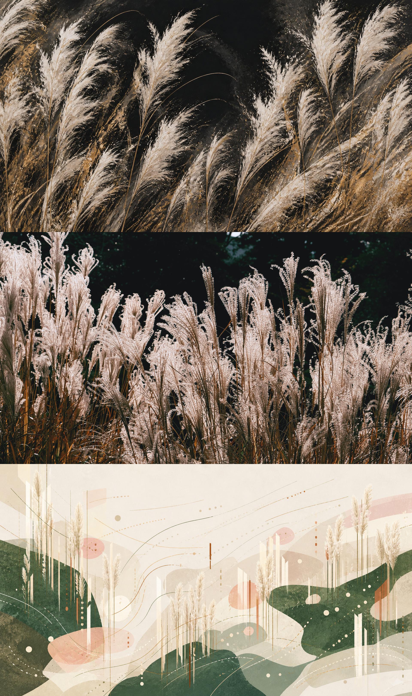
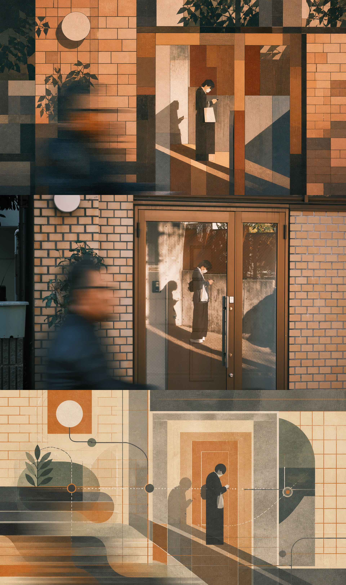
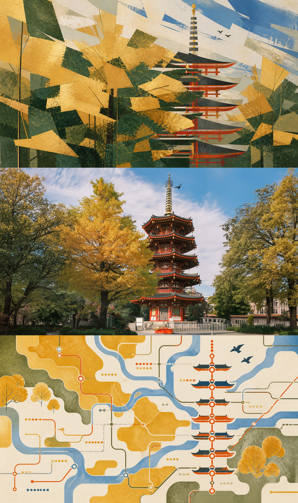
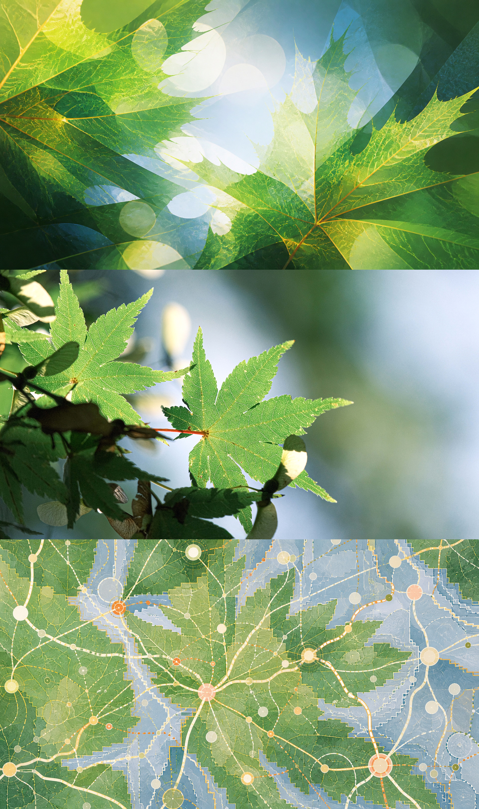
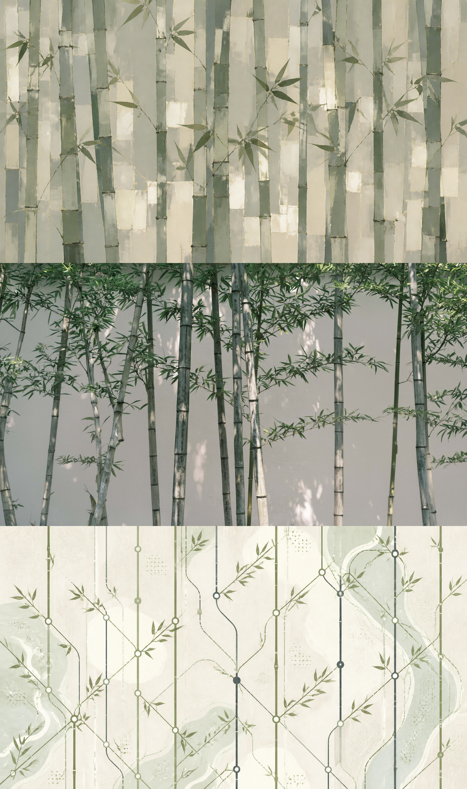
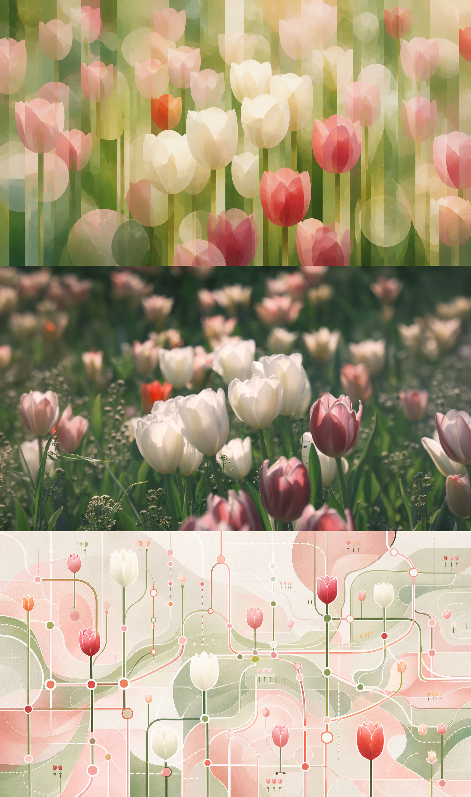
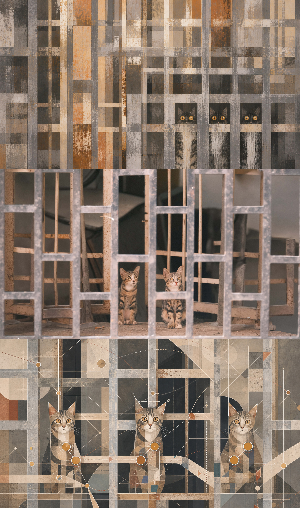

一张旅行照片，
三个记忆层次。
WHAT HAPPENED
WHAT STAYED
THE THREE LAYERS
01
看见
EXPRESSIVE PERCEPTION
主体、光、色彩、材质与第一印象
02
发生
ORIGINAL MOMENT
原始摄影证据，不重绘、不滤镜
03
记住
RELATIONAL MEMORY ATLAS
路径、节点、重复、距离与余像
Evidence → Perception → Memory
结合视觉记忆的最低辨识度与旅行照片的证据拆解方法：上联使用全画幅材质、色彩与节奏表达“看见”；下联把同一照片的方向、间隔、遮挡和距离重组为记忆图谱。两者相连，但不重复。
COMPLETE PROMPT SYSTEM
先读照片，
再生成记忆。
SOURCE MAP
主体 · 最低辨识线索 · 主导质量 · 结构载体 · 方向 · 重复 · 间隔 · 遮挡 · 景深 · 留白 · 光 · 色彩角色 · 时间感
TOP — DECONSTRUCT → SELECTIVE PRESERVATION → EXPRESSIVE RECONSTRUCTION
BOTTOM — DECONSTRUCT → DISTILL → RELATIONAL RECONSTRUCTION
完整双面板提示词、证据映射、纠错口令、批处理映射和确定性拼接脚本均收录在可下载 Skill 中。内置本页 10 张作品作为视觉参考。
主体 · 最低辨识线索 · 主导质量 · 结构载体 · 方向 · 重复 · 间隔 · 遮挡 · 景深 · 留白 · 光 · 色彩角色 · 时间感
TOP — DECONSTRUCT → SELECTIVE PRESERVATION → EXPRESSIVE RECONSTRUCTION
BOTTOM — DECONSTRUCT → DISTILL → RELATIONAL RECONSTRUCTION
完整双面板提示词、证据映射、纠错口令、批处理映射和确定性拼接脚本均收录在可下载 Skill 中。内置本页 10 张作品作为视觉参考。
THREEFOLD STUDIES
十次记住









